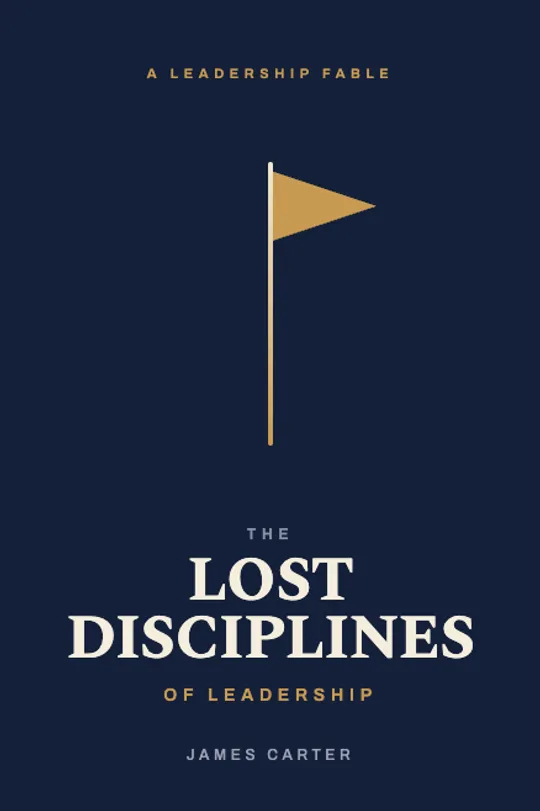

Team building you can measure.
Most team building is a great day that fades by Friday. Ours connects heart and mind to a real business outcome — then follows up on behavior for 30 days to prove it stuck. People leave having genuinely learned something, and loving the company that brought us in.
A good day is not a result
Fun, then forgotten
Ropes courses and trivia nights create a pleasant memory and a few photos. By the next week, nothing about how the team actually works has changed — and there’s no way to know if it did.
Felt, learned, measured
We make the lesson emotional so it sticks, tie it to a specific outcome leadership cares about, and follow the behavior for 30 days. ‘It worked’ becomes a number, not a vibe.
Four stages, from heart to data
Connect the heart
An emotionally charged experience — often giving back to a child who needs it — makes the moment personal and unforgettable.
Engage the mind
Facilitation ties that emotion to a specific business outcome: customer service, quality, leadership, trust or change.
Practice the behavior
Participants experience what they do, not just what they know — rehearsing the new behavior, not hearing about it.
Measure for 30 days
We follow up on behavior for 30 days against a baseline, so the change is demonstrable — and durable.
What we actually move
We follow the behavior for 30 days
The event is where change starts — not where we stop measuring. We track the new behavior for a full month against the team’s baseline, so you can see whether it actually stuck instead of hoping it did.
Read what teammates wrote — on the spot.
When the method lands, you don’t have to argue it worked. After DaVita’s bike build, evaluation forms came back with comments like “the best team building exercise in 20 years of healthcare” and “I’ll remember this my whole life.” That’s heart connected to outcome — and it’s why they love the company that brought us in.
- ✓Hundreds of unedited comments from a single national meeting.
- ✓4.88 / 5 for ‘good use of my time’ — a hard number, not a vibe.


The Lost Disciplines of Leadership
A leadership fable by our founder, James Carter — the philosophy beneath everything we do: that knowledge means nothing without committed action, and that the disciplines that actually build people are the ones most leaders have forgotten.
More about James Carter →Three ways in
An experience
A single, emotionally charged event that connects heart to outcome — for 5 to 5,000.
Browse experiences → OngoingA program
TeamwoRx — monthly measurement, Team Workouts and coaching that compound all year.
Explore programs → At the topTeam coaching
The same measured approach for your leadership team — trust, alignment, accountability.
See team coaching →What outcome do you need to move?
Tell us the business result you’re after — service, quality, leadership, trust or change — and we’ll design an experience that moves it, and prove it did.